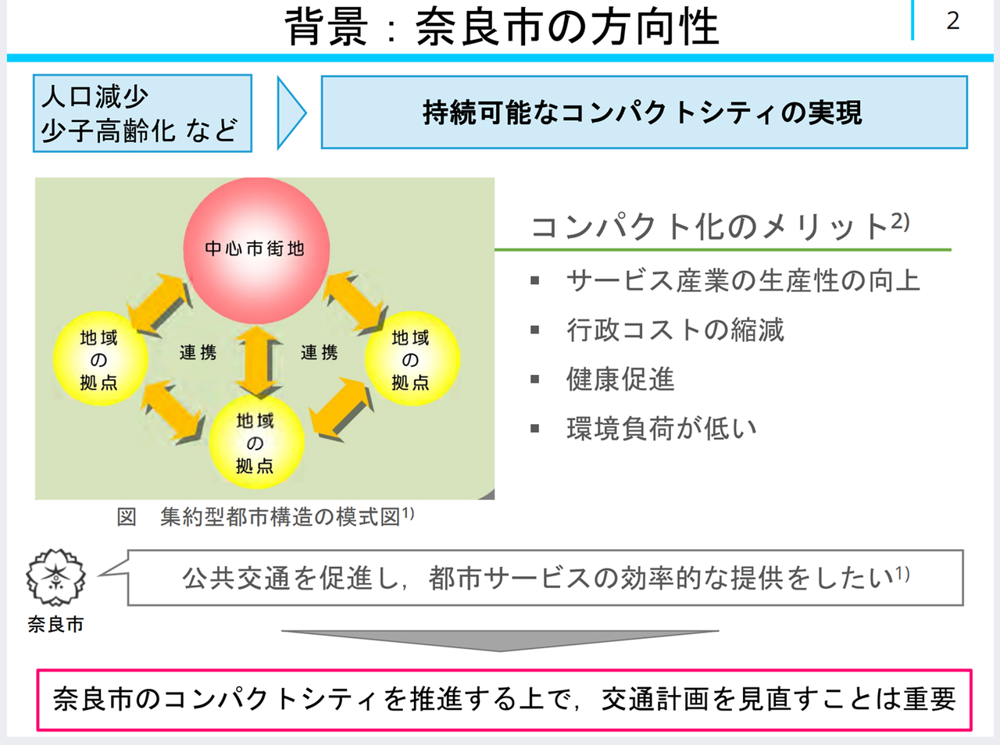
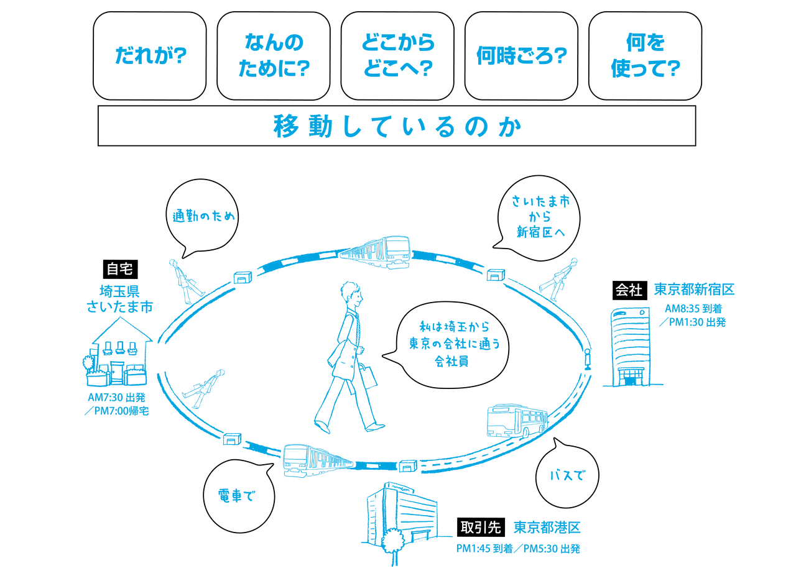
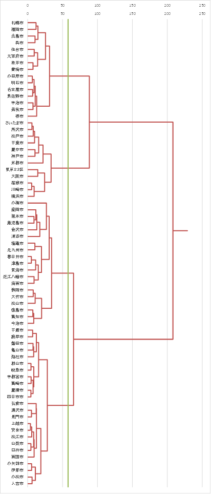
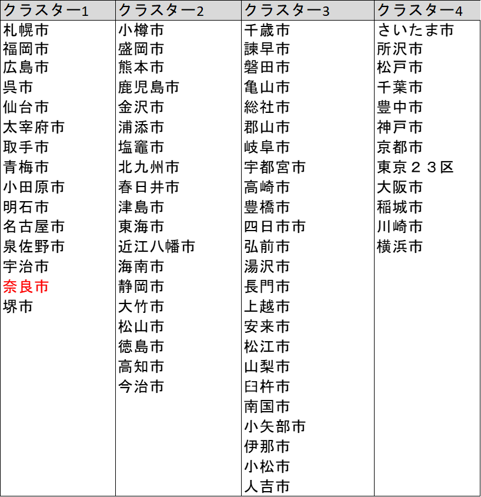
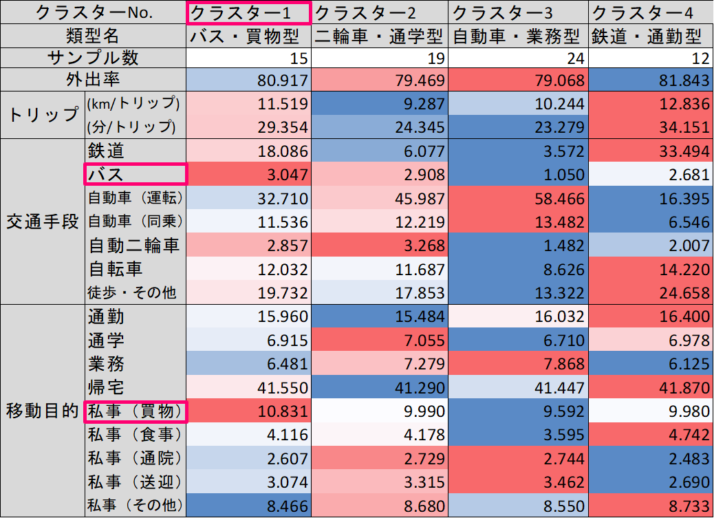
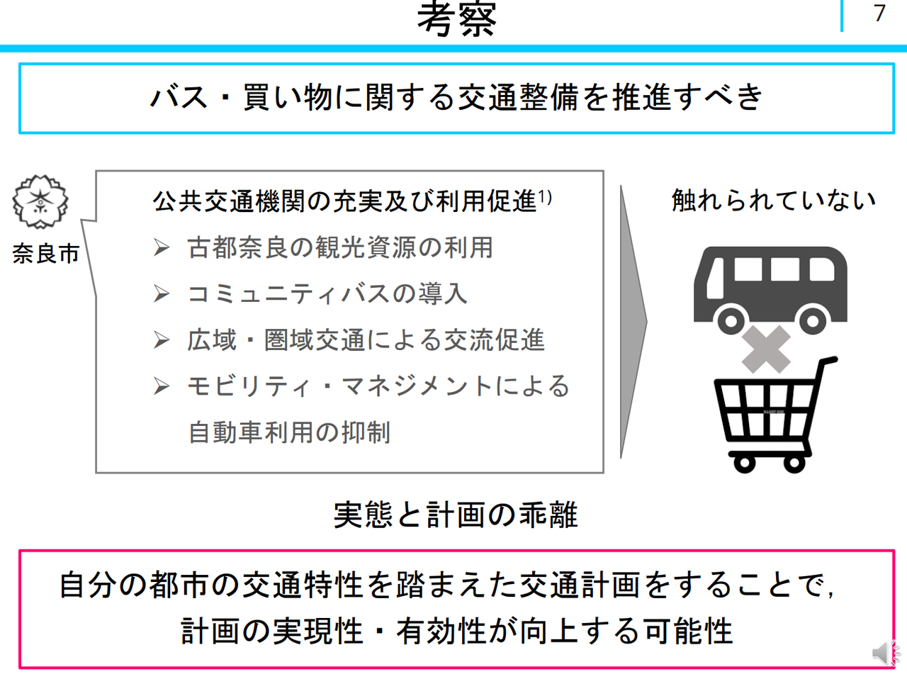

こんにちは、社会工学類 都市計画主専攻4年の室岡と申します。
夏休みの目標は「きちんと食べて寝る。そしてたまにビールを飲む」でした。概ね達成できていると思います(9/17現在)。（もちろん研究もやってます）
さて、今回は奈良市の都市交通計画に意見するため、データを集め、統計分析した結果を共有します。感想やこういう分析したほうがいい！などのご意見お待ちしております。ちなみに奈良市を選んだのは日本地図上にサイコロ投げて止まったからです
1. 背景
奈良市では人口減少に対応するため、コンパクトシティを目指しています[1]。
中心市街地と地域拠点が公共交通により連携することにより、以下のようなメリットがあると言われています[2]。
1) サービス施設の集積による生産性の向上
2) インフラ投資の削減による行政コストの縮減
3) 公共交通と徒歩による健康促進効果
4) 自動車利用抑制による環境負荷の低減
はい、いいですね。goodです
将来目標を達成するためには、現在の状況を踏まえたうえで、計画の立案・見直しをすることが重要です。そのため、奈良市のコンパクトシティを推進する上で、交通計画を定量的に見直す必要があります。
２. 目的と内容
以上の背景を踏まえ、本記事の目的を「奈良市の交通実態を定量的に分析し、コンパクトシティ推進に向けた基礎的な参考情報の提供をすること」とします。目的達成するために、奈良市の交通特性を分析し、実際の計画と比較して考察します。
３. 分析概要
3.1分析手法
目的達成のために、交通特性(移動手段・目的・距離など)によって全国の都市を類型化し、
奈良市がもつ交通の特性の客観的な位置づけを把握します。
類型化に関しては、クラスター内の情報の損失をできる限り防ぐため、ウォード法を用いてユークリッド距離で計算しました。詳しく知りたいみなさんはこちらをご覧ください。
3.2 使用データ
用いるデータは国土交通省が提供している「全国 PT（パーソントリップ）調査[3]」です。これは、個人属性に関する情報と１日の移動 をセットで尋ねることで、「どのような人が、どのような目的で、どこからどこへ、どのような時間帯に、どのような交通手段で」 移動しているかを全国70都市で集計したデータです。パーソントリップ調査において、人の移動は「トリップ」という単位で計測されます。通勤や買い物など、「一つの目的」を達成するために出発地から到着地まで移動すると１回とカウントします。
図 PT調査のイメージ(https://www.tokyo-pt.jp/person/01)
4. 分析結果
クラスター分析の結果、以下のようなデンドログラムを得ることができました。
特性が似ている市町村が隣にきます。
緑色の線で区切ったとき、4つのグループに分かれます。
奈良市は1番上のグループに属していますね
長いので表にまとめました。
つぎに、それぞれのクラスターはどのような特性を持っているのでしょうか？
各クラスターの交通特性値を見ていきます。
以下のようにクラスターの名前を付けました。
1) 奈良市はクラスター1に属しています（ピンク枠）。クラスター１は、移動手段に関してはバス、移動目的に関しては買い物であることが他の都市と比べて高いです。これより、クラスター1を「バス・買い物型」交通特性とします。
2) クラスター2は、移動手段に関しては二輪車、移動目的に関しては通学であることが他の都市と比べて高いです。これより、クラスター2を「二輪車・通学型」交通特性とします。
3) クラスター3は、移動手段に関しては自動車、移動目的に関しては通学であることが他の都市と比べて高いです。これより、クラスター3を「自動車・業務型」交通特性とします。
4) クラスター4は、移動手段に関しては二輪車、移動目的に関しては通学であることが他の都市と比べて高いです。これより、クラスター4を「鉄道・通勤型」交通特性とします。
５. 考察
実際の奈良市の都市交通計画を見ていきます。奈良市都市計画マスタープラン上では、実際の交通方策として以下のことを主な目標としています[1]。
・古都奈良の観光資源の利用
・コミュニティバスの導入
・広域・圏域交通による交流促進
・モビリティ・マネジメントによる自動車利用の抑制
これらのなかにはバスと買い物を掛け合わせたような政策が見当たらず、実態と計画が乖離しています。実態と計画が乖離していると、都市構造の集約化は難しいと考えられます。そこで、自分の都市の交通特性を踏まえた計画をすることで、その実現性・有効性が向上する可能性があると考えられます。したがって、奈良市はバス・買い物に関する交通整備を推進すべきと考えられます。例えば、バスの利用によって、買い物でクーポンを使用可能にするといった政策などが挙げられます。
６. まとめ
本レポートでは、奈良市の交通特性を把握し交通計画に資する参考情報の提供するために、クラスター分析を行い、全国の都市を類型化しました。その結果、奈良市はバス・買い物型の交通特性を有していることが明らかとなりました。しかし、奈良市の交通政策にこれらを考慮した方針は見られず、実態と計画の乖離が見られました。集約型都市構造をより実現可能にするためには、自分の都市の交通特性を客観的に把握したうえで計画することが重要であると考えられます。そのため、バスと買い物をかけ合わせた交通政策が有効である可能性があります。しかし、今回のデータからはなぜ「バス・買い物型」になったかの要因分析まではできてません。そのため、今後の課題として、交通特性になった要因を分解し、それぞれの要因が与える影響の強さを推定したうえで、施策の優先度を検討する必要があります。
７.おわりに
いかがでしたか？交通特性によって都市が類型化できるのはおもしろいですよね。
みなさんのまちはどのような特性をもっているか、実際のまちの様子とデータを見比べるともっと楽しいかもしれません。
参考文献
[1]奈良市都市計画マスタープラン
https://www.city.nara.lg.jp/uploaded/attachment/12153.pdf
[2]国土交通省：コンパクト・プラス・ネットワークの推進についてhttps://www.mlit.go.jp/toshi/tosiko/toshi_tosiko_tk_000033.html
[3]国土交通省：全国都市交通特性調査https://www.mlit.go.jp/toshi/tosiko/toshi_tosiko_tk_000033.html